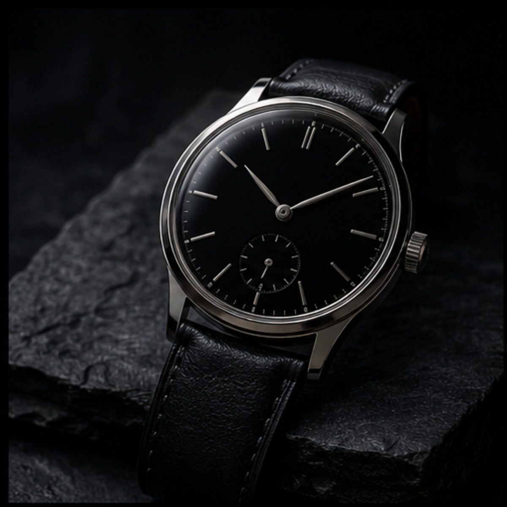
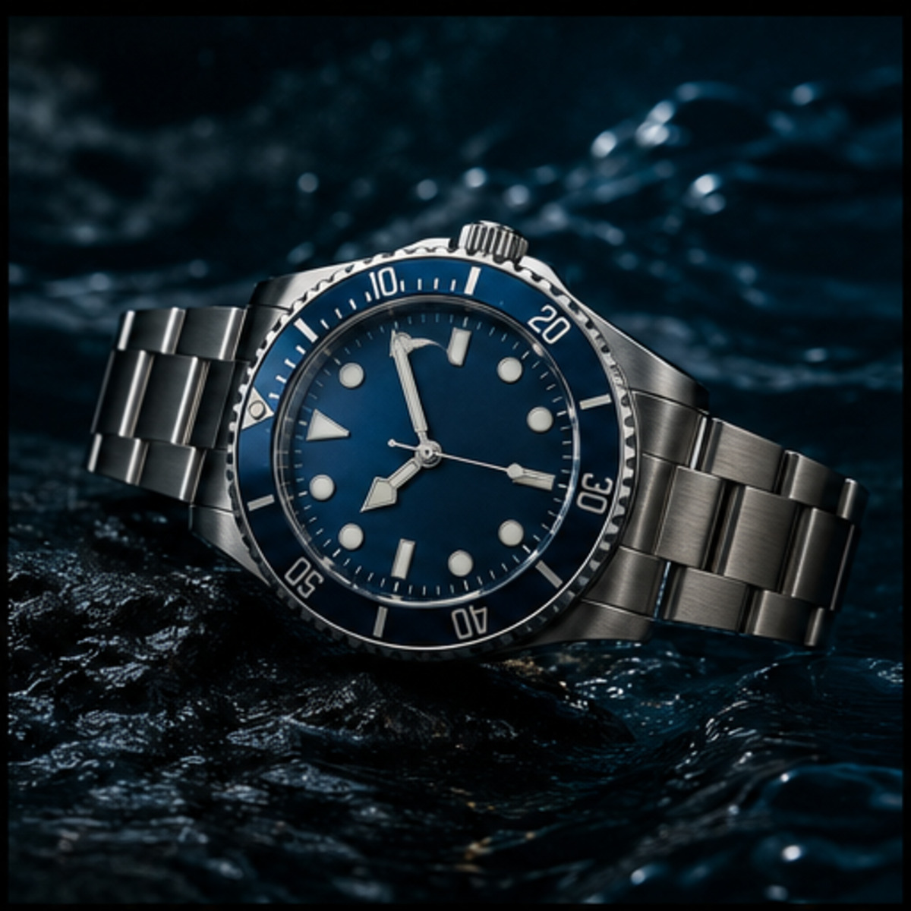
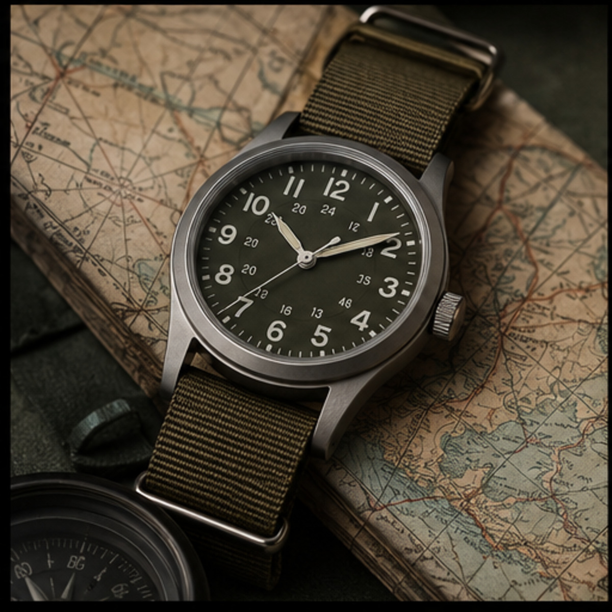
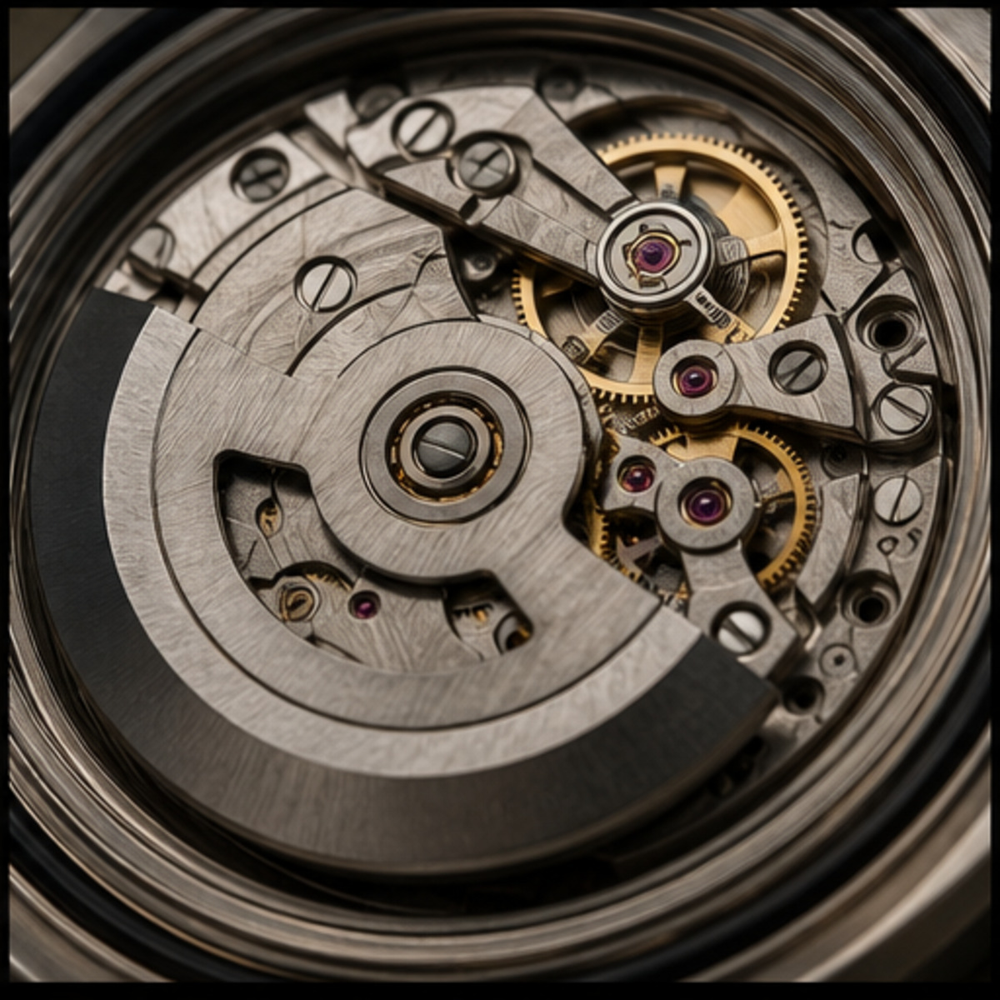
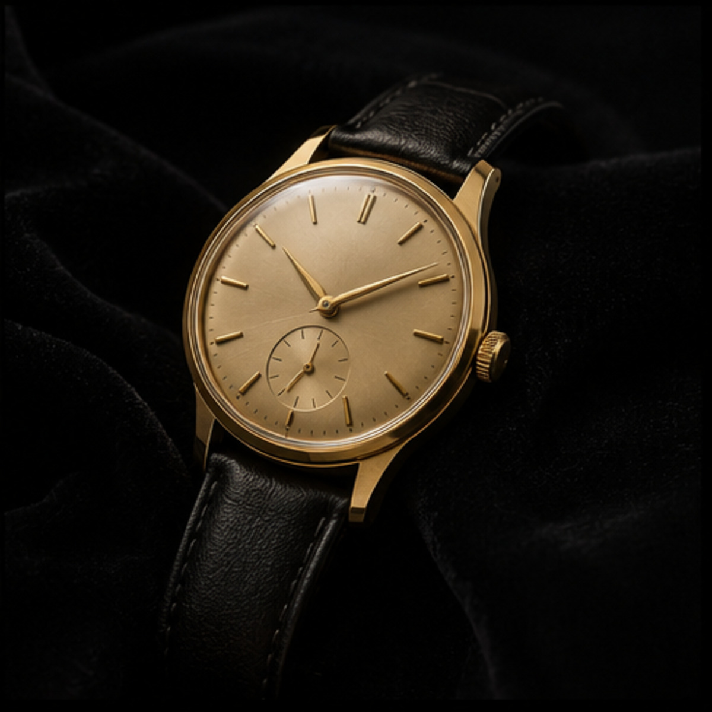

THE LONG READ
Wrist Journal
Twelve complete guides for understanding, choosing and caring for watches.

GUIDE 01 · 7 MINChoosing Your First Mechanical Watch
A calm framework for comparing movements, proportions, service needs and long-term appeal.

GUIDE 02 · 8 MINWatch Size and Wrist Proportion
Why diameter is only one part of fit, and how lug length and thickness change the experience.
 GUIDE 03 · 9 MIN
GUIDE 03 · 9 MINAutomatic vs Manual-Wind Movements
The practical differences between two rewarding approaches to mechanical timekeeping.

GUIDE 04 · 10 MINUnderstanding the Modern Dive Watch
A clear guide to bezels, legibility, water resistance and everyday versatility.

GUIDE 05 · 11 MINA Practical Guide to Chronographs
How timing functions work and what to consider before adding a chronograph.

GUIDE 06 · 7 MINThe Enduring Field Watch
From military utility to modern daily wear: why the format remains relevant.
GUIDE 07 · 8 MINThe Complete Watch Strap Guide
Leather, steel, rubber and textile straps explained through comfort, climate and character.
GUIDE 08 · 9 MINHow to Care for a Mechanical Watch
Simple routines for cleaning, storage, magnetism awareness and responsible servicing.
GUIDE 09 · 10 MINHow Dial Design Shapes Readability
Markers, hands, contrast and negative space—the quiet craft behind a useful dial.
GUIDE 10 · 11 MINBuilding a Small, Versatile Watch Collection
A thoughtful three-watch approach built around real routines rather than categories alone.
GUIDE 11 · 7 MINVintage Watch Buying Basics
How to assess condition, originality, service history and seller transparency.
GUIDE 12 · 8 MINWater Resistance Explained Clearly
Ratings, seals, crowns and testing: what those numbers should mean in daily life.